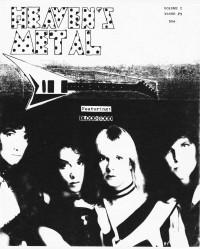
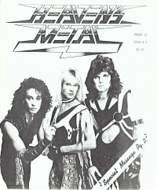
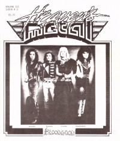
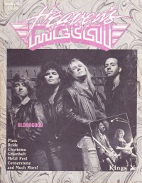

BloodgoodOn the cover|  | March 1986
Heaven's Metal |
 | 1986
Heaven's Metal |
 | 1987
Heaven's Metal |
 | December 1989
Heaven's Metal | Media coverage:- Mar 1986 in Heaven's Metal "Bloodgood"
- May 1986 in Heaven's Metal "Bloodgood", by Doug Van Pelt
- 1986 in Heaven's Metal "Bloodgood", by Doug Van Pelt
- 1987 in Heaven's Metal "Bloodgood", by Doug Van Pelt
- May 1987 in CCM "Messiah Metal", by Devlin Donaldson, Steve Rabey
- 1987 in Heaven's Metal "Bloodgood", by Doug Van Pelt
- 1987 in Heaven's Metal "Quotable Quotes"
- 1987 in Heaven's Metal "Metal Tracks: Bloodgood"
- Sum 1987 in Harvest Rock Syndicate "Metal Missionaries Ready to Detonate", by Kevin Allison
- Aug 1987 in CCM "In Concert: Moore Theatre, Seattle, WA", by Dan Wiebe
- Sep 1987 in Notebored "Bloodgood"
- 1987 in Cornerstone "Interview: Bloodgood"
- 1987 in Heaven's Metal "Bloodgood", by Doug Van Pelt
- 1987 in Heaven's Metal "Metal Mardi Gras", by Doug Van Pelt
- Win 1987 in Harvest Rock Syndicate "Metal Shop: In Concert: Granny's Rocker, Edwardsville, IL", by Ernest P. Strange
- Jan 1988 in CCM "Toys in the Band: Bloodgood"
- Jan 1988 in CCM "Heavy Metal Thunder", by David S. Hart
- Jun 1988 in Heaven's Metal "Concert Review: The Best White Metal Show Ever!", by Daniel Nordström
- Sep 1988 in CCM "Notebook: Rockin' a Hard Place", by Brian Quincy Newcomb
- Win 1988 in Harvest Rock Syndicate "Rocks 'N' Rolls With The Changes", by Dan MacIntosh
- Dec 1989 in Heaven's Metal "Out of the Darkness With Bloodgood", by Doug Van Pelt
- Feb 1990 in Heaven's Metal "Poster: Les "Pilate" Carlsen of Bloodgood"
- Nov 1991 in Notebored "Bloodgood"
- Dec 1991 in CCM "Faces: Bloodgood", by Randy S Rocker
- Mar 1992 in CCM "In The News: Artists Ignite Sacred Fire In Hearts of Russians"
- Mar 1992 in Heaven's Metal "Concert Review: Bloodgood In Russia", by Doug Van Pelt
- Jul 1992 in Syndicate "Spotlight: Bloodgood", by Billy W. Bennight II
- Jul 1993 in Heaven's Metal "Still Standing Together", by David Muttillo
- Jul 1993 in Heaven's Metal "Concert Review: Bloodgood", by Doug Van Pelt
- Sep 1993 in Heaven's Metal "Metal Tracks: Bloodgood"
- Jan 1997 in HM "All Standing... But Not Together", by Doug Van Pelt
- Jul 1998 in 7ball "History: Bloodgood", by Brian Quincy Newcomb
- Mar 2003 in HM "Pick of the Litter: Bloodgood", by Doug Van Pelt
- Aug 2007 in Heaven's Metal "Bloodgood", by Doug Van Pelt
- Apr 2017 in Metalbreed "Hard Rock Forever: Bloodgood", by Perla Martínez
- Aug 2017 in Metalbreed "Amplio Espectro: Trenches of Rock: The Metal Mission of Bloodgood"
Albums & reviews:1985: Metal Missionaries1986: Bloodgood1987: Detonation1988: Rock in a Hard Place1989: Out of the Darkness1990: Shakin' The World: Live Volume Two [video]1990: Alive In America (Live Vol 1)1990: Shakin' The World (Live Vol 2)1990: Alive In America: Live Volume One [video]1991: The Collection1991: All Stand Together1993: To Germany With Love2007: Rock Theater: Shakin' The World2009: Live In Norway2010: Detonation [reissue]2010: Bloodgood [reissue]2013: Dangerously Close Award Summary (Nominations / Wins)Dove AwardsBooks about Bloodgood- "0405 Bloodgood" in Headbangers: The Worldwide Mega-Book of Heavy Metal (Mark Hale, 1993)
- "Bloodgood" in The Encyclopedia of Contemporary Christian Music (Mark Allan Powell, 2002)
|